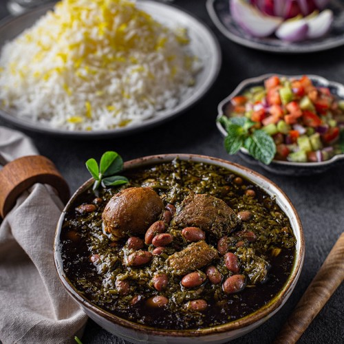

Ghormeh sabzi is deliciously savory and loaded with the flavors of several different green herbs. It's traditionally served atop white rice. You can also serve it with lavash bread.
This Persian beef stew features kidney beans, spinach, cilantro, and dried limes.